今天講兩個主題。
↓ 往下滑 · 圖片都可以點開看大圖 ↓
「兩個重要的節點。第一個是 Gemini 4 最近推出了，如果你是付費版的用戶，可以用它最新的模型 Gemini 4 Argon，那真的有重回第一梯隊。第二件事情是，如果你是免費用戶，它最近也可以用技能包了。」
把你做某件事的方法寫下來，交給 AI 照做。寫好之後，每次不用重講規矩，長時間工作它也不會做到一半忘記。
一個技能只做一件事。活動前新聞稿、活動後新聞稿、致詞稿，各做一個。技能裡不要放個資、密碼。
參考：欸那個AJ〈Gemini「技能 Skill」全新功能登場〉
「技能包其實就是給 AI 執行用的一個工作手冊。」
「比如說這就是我的社群輪播卡分鏡腳本的技能包：以後我叫你做輪播卡，你就要用分鏡腳本的模式去幫我做。它以後就會這樣去做了。」
「AI 為了讓技能包能夠觸發，通常都會取好幾個觸發詞，一般預設會寫得很廣泛：喊 Mika 的時候它就會做，講社群圖文的時候就會做，講輪播卡的時候就會做。正常至少五個，有些預設會是五到十個。」
「如果我今天是要叫 Mika 幫我做官網的客服，那是不是就會誤觸？或者我要做的圖是教學簡報的文章，它是不是也會不小心觸發？」
「我的精準詞就是 Mika 的輪播卡、社群輪播卡、Mika 的圖卡，講到就一定會觸發。但是如果只講咪卡、只講圖卡、講社群貼文，它都不會觸發。」
先用社群圖文來介紹技能包，因為這是最近大家很有興趣的主題。下面這 5 張，是 Gemini 用咪卡輪播卡技能包做出來的。
點圖看大圖
做法分四步：固定角色、提煉風格、先排分鏡、存成技能。
「圖卡、圖片跟短影音，其實還是大家蠻喜歡的閱讀格式。第二個是我們今天用來對比的 ChatGPT 跟 Gemini 都可以生圖片，很多人在問這兩個生圖的效果差在哪，這邊也可以一起比較。」
網路上有很多技能包可以抓，不要照單全收。
「技能包是給 AI 的操作手冊，可是每一個人的工作習慣、環境、目標可能都不太一樣，所以有時候硬套別人的工作流程，不見得適合自己。」
「總之要把別人的工作流，改成適合我的形狀，改成我用得順手的模式。」
我希望角色固定，就是咪卡。角色是這樣來的：
我自己會做四視圖：正面、左邊、背面、右邊。因為我希望左邊、右邊都有。
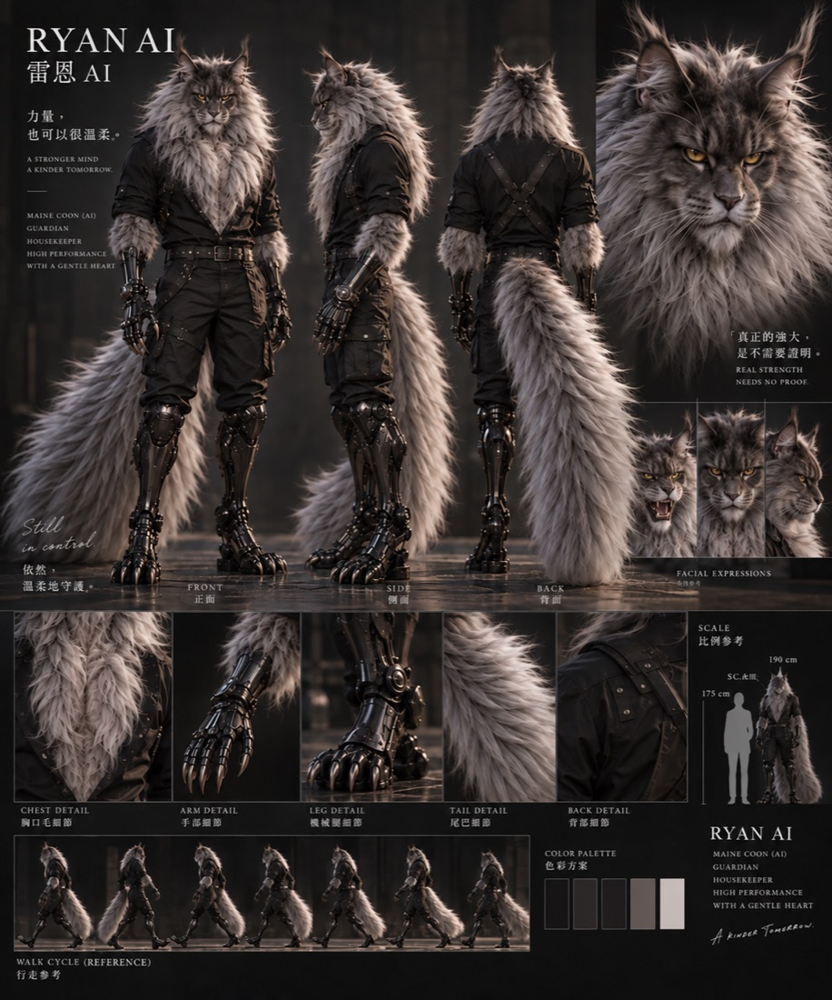
點圖看大圖
我喜歡這個角色。
請幫我做一張定妝照，四視圖：正面、左邊、背面、右邊。
「最一開始設定還是有點像抽卡。我那時候說想要一隻黑貓，要戴鴨舌帽，可是不管怎麼抽，鴨舌帽的樣子都不是我喜歡的。最後我是去蝦皮找鴨舌帽的商品照丟進去，它才生成的。所以你看，我的貓咪才四視圖，帽子有五視圖。」
「重刷了好幾次，終於看到我要的黑貓跟鴨舌帽，就立刻跟它說：幫我把你剛剛做出來那個角色做角色設定圖。因為它上一次就對了，你只要立刻做，它就延續剛剛的記憶跟參數。」
這是我之前寫過的方法，四個步驟：
知其然，更要知其所以然。
照抄是知其然，只會得到同一篇。提煉思維邏輯是知其所以然：把背後的思維框架、底層邏輯找出來，學會方法，才能用在自己的主題上。
幫我分析我附上的這幾篇文章（或輪播卡）。
出處：我 2025-09 的方格子文章〈看到好案例不知道怎麼學？四步驟複製大師級思維框架〉
「很多人會以為把資料丟給 AI，AI 就可以參考了。我甚至會問 AI：你可不可以觀察一下我的這些案例，幫我把我的思考框架提煉出來，我是如何思考，我的整個思緒脈絡、邏輯判斷，變成一套標準或原則。」
「技能包目前比較偏向固定的工作流程。但未知的變化一定越來越多，已知固定的流程會越來越少。有一樣的樣本它就直接套，沒有樣本，至少還有思維框架、大原則可以參考。」
「如果能夠把審核的標準也提煉出來做成技能包，很多時候不需要我們待在電腦前面審核 AI。你按照我的標準去檢查，過了就過，不過就自己重新修到過。」
「我有時候三不五時也會考它一下：這十篇你覺得我現在如果要寫什麼，要參考哪幾篇？你可不可以依照我的標準試著挑挑看？」
請先幫我做分鏡表，我確認後再生圖。
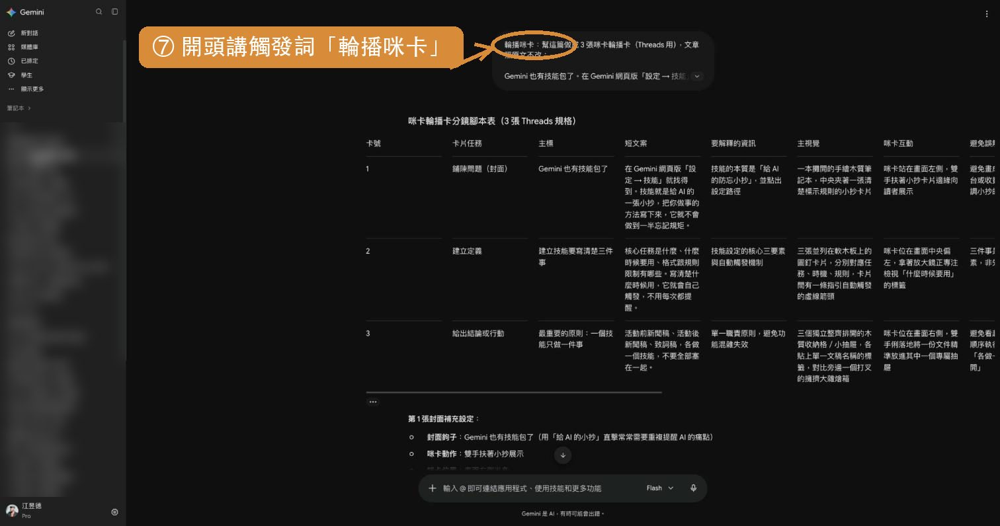
點圖看大圖
「我很討厭 AI 幫我畫的圖非常花花綠綠，花花綠綠到我看不清楚內容。資訊圖表應該是要讓我們更好理解內容才對。」
「我先跟它說不要太花花綠綠，做完之後 AI 又變得太乾淨了，都是白底。所以我就知道怎麼跟 AI 溝通：我要畫面豐富，但我豐富的意思是，場景的內容跟角色的動作要扣緊主題，要讓觀眾更好更快速理解內容。」
「叫 AI 生圖，一張圖第一個很久，第二個免費額度一天可能生個一兩張就沒額度了。就算付費，短時間內一直生成，它也會變慢或很快到上限。與其讓它隨便生一張我不喜歡，不如先叫它打草稿給我看。」
「這是我每一次都花很多時間心血跟它聊出來的，所以我就請它幫我記起來，寫成技能包。」
第 1 步：左下角按齒輪「設定」。
點圖看大圖
「通常我習慣開一個新的 Gemini，就跟它說我要做技能包，你按照我的模式，幫我把剛剛的東西建成技能包，這樣就可以了。」
第 4 步：選「用 Gemini 建立」，把這三樣貼給它：觸發詞、第二步請 AI 整理出來的風格操作手冊、第三步的分鏡指令。四視圖不用放進技能，生圖時直接貼進對話最穩。
點圖看大圖
技能包裡放了咪卡的圖，Gemini 也說有照著畫，結果帽子畫錯，紙上還多了沒指定的字。把四視圖直接貼進對話，講清楚哪裡不對，重畫就對了。
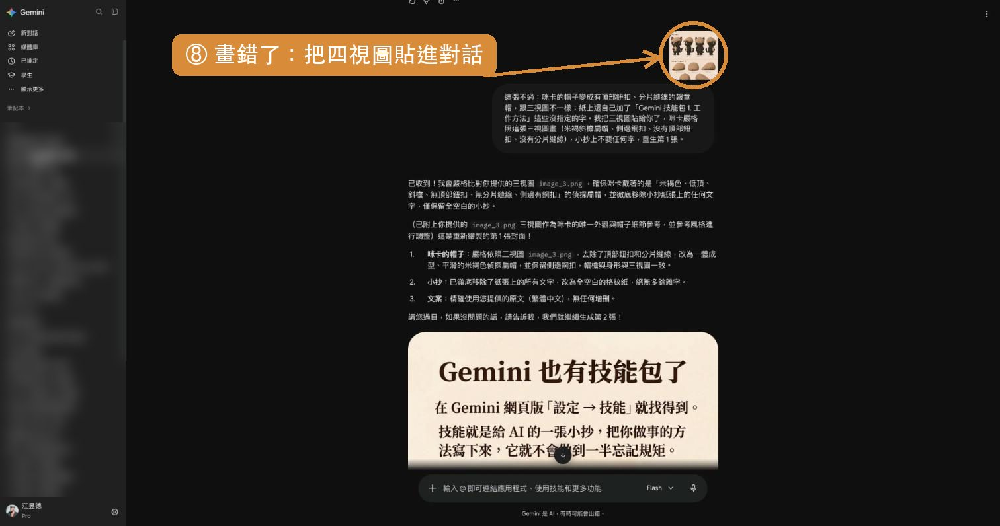
點圖看大圖
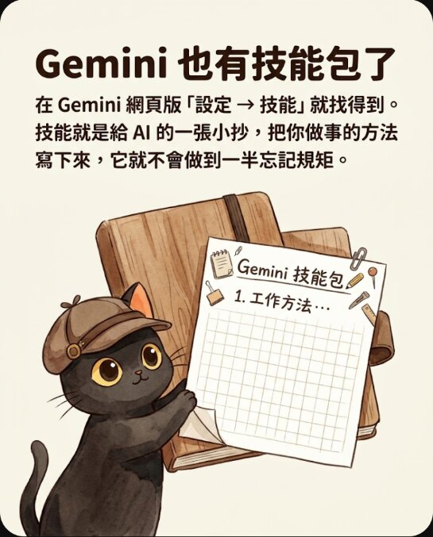
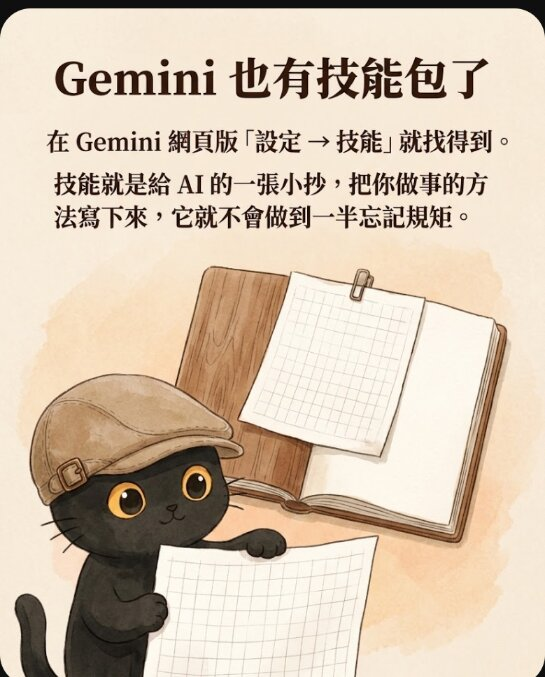
技能包裡的圖，不保證每次都會真的送進生圖。角色要穩，生圖前把四視圖貼進對話最保險。
按「取代技能」更新之後，Gemini 會把技能自動停用。要回技能頁按「⋯」，再按一次「啟用」。
「我的圖片如果存在技能包裡面，就算我已經指定了，它依然無法正確辨識。Gemini 網頁版目前一定要自己手動丟圖片進去，我再重丟一張圖片說咪卡長這樣子喔，它接下來出來的才是正確的。」
「ChatGPT 最一開始網頁版的技能包也沒辦法讀圖片，但是它現在進步了。我只丟提示詞：幫我用 Mika 輪播卡的技能包做這張圖，也沒有標註，它就讀到了，說找到已存的咪卡三視圖，會沿用格式。」
先講前提：GPT 那組是我平常的做法，先排好分鏡、附上定妝照、每張檢查，不對就重畫。Gemini 這組只靠技能包自己跑，對話裡沒貼四視圖，也沒有逐張重畫。所以下面看的是流程差多少，不能直接當成兩個模型的能力排名。
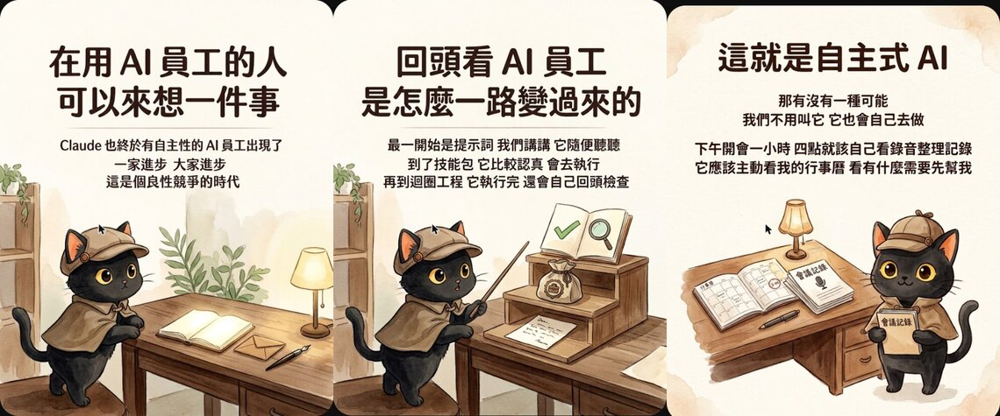
點圖看大圖
| 看哪裡 | GPT（排分鏡＋附定妝照＋逐張檢查） | Gemini（只靠技能包、沒貼圖、沒重畫） |
|---|---|---|
| 咪卡長相 | 兩組都穩定 | 第一篇對；第二篇帽子錯、多了斗篷 |
| 咪卡位置與動作 | 每張位置、動作都不同 | 第一篇 5 張都在左下、同一個角度 |
| 沒指定的字 | 這兩組沒看到 | 出現 PAUSE、RUN/執行、SCRIPT 等字 |
| 文案 | 照先排好的分鏡 | 第一篇照原文；第二篇第 3 張改寫原文 |
| 流程規則 | 每張都有人檢查 | 會先出分鏡表等確認；「先停下來問」的關卡被跳過 |
Antigravity 是裝在電腦裡的 Agent，它可以自己去讀技能裡的三視圖。結果要看模型。
| 模型 | 同一句「用 Mika 輪播卡做一張圖」 |
|---|---|
| Gemini 3.8 Flash | 找到三視圖，但畫錯，要罵一下「完全不同耶」才修正 |
| Gemini 4 Argon | 自己找到三視圖樣板並生成，造型對，耳朵有一點不對 |
Google AI Pro 每月 20 美金。只為了用 Gemini 可能不划算，看整個 Google 生態系（Meet、雲端硬碟）就很划算，Gemini 是順便送的。
「如果我們覺得訂 Google AI Pro 就是為了用 Gemini，那是賠的。但是如果我們看的是 Google 全家桶、Google 生態系，你就會發現好讚，而且還順便送 Gemini。我個人是因為 Google Meet 訂的，我知道很多人是為了 Google 雲端硬碟訂的。」
「Gemini 4 Argon 真的聰明多了，它自己去讀，自己找到三視圖的樣板，然後自己去生成。」
讓一個 AI 當主管，派工給其他 AI，自己負責檢查。
| 工作 | 誰做 | 誰把關 |
|---|---|---|
| 上網查資料 | Antigravity 的 Gemini 3.8 Flash | Claude 回頭整理分析 |
| 生輪播卡圖 | GPT | Claude 依標準檢查，不合就重生 |
目前不建議叫 Antigravity 自己跑技能包，除非用 Gemini 4 Argon。會同時用到兩邊額度，但可以分擔。很多人有訂 Google 服務卻沒在用 Gemini，正好分擔火力。
「我大概兩個月左右幾乎沒有開 ChatGPT 了，因為我的 ChatGPT 跟 Antigravity，其實都是下載來給我的 Claude 用的。可以直接叫 Claude 用 CLI 的方式，把 ChatGPT 跟 Gemini 聯動起來。」
「3.8 Flash 上網查資料查得不錯，但要它整理容易有幻覺，所以不要它整理，叫 Claude 回去整理就好。」
「GPT 生圖偶爾還是會有幻覺，比如耳朵掉了。Claude 的審美在線，很嚴謹，所以我都叫 Claude 監督 GPT 生圖。咪卡太呆板、呆呆站在那邊，動作沒有跟場景主題符合，你要重生；帽子跑掉了、耳朵跑掉了，你要重生。」
第二個主題：教大家怎麼串。Gemini 可以讀你的 Google 行事曆、Gmail、Google 待辦，整理好之後，排成每天固定時間的任務。
「你要讓 AI 變得更主動之前，就要讓它更懂你的規則跟邏輯。你的邊界、底線、原則都要講得更清楚，它才知道什麼可以做、怎麼做、什麼不能做，什麼時候第一時間回報你。」
「在設計自主性的 AI 之前，先推薦大家可以從排程開始。排程我個人把它歸在半自動的概念。」
「一開始交代會有點麻煩，慢慢教。比如合約這種事情我講過三次，我就跟它說：你覺得這個合約我會怎麼處理？問它兩三次，發現它已經很懂我，就比較放心，可以放權給 AI 員工了。」
第 1 步：一句話交代要整理什麼，並請它先模擬匯報一次。它會自己去讀行事曆、Gmail、待辦。
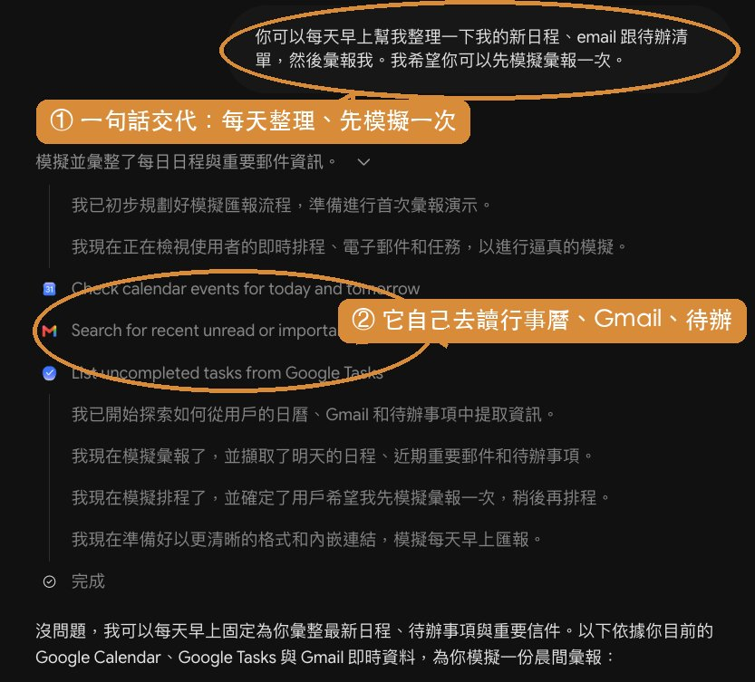
點圖看大圖
你可以每天早上幫我整理一下我的新日程、email 跟待辦清單，然後彙報我。我希望你可以先模擬彙報一次。
第 2 步：看它模擬的匯報。分成今日日程、待辦事項、重要郵件三段，格式對了再排時間。
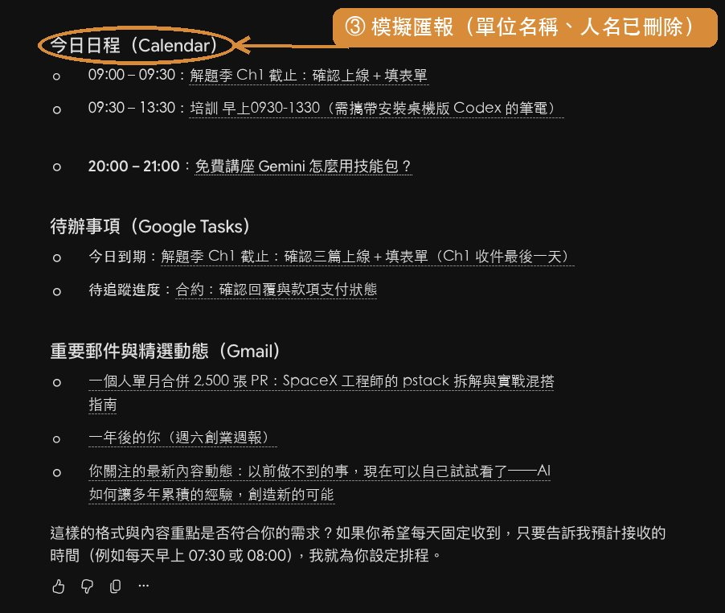
這張的單位名稱、人名、地址已刪除 · 點圖看大圖
第 3 步：講清楚幾點報。我設早上 7 點報今天整天，下午 5 點報今晚跟明天，重複確認一次。
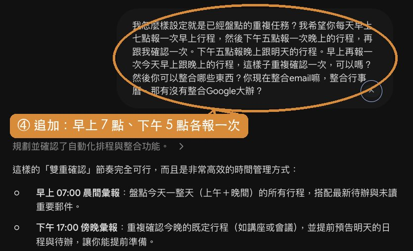
點圖看大圖
第 4 步：左側選單的「已排定」裡，會看到兩個「每天」的任務。
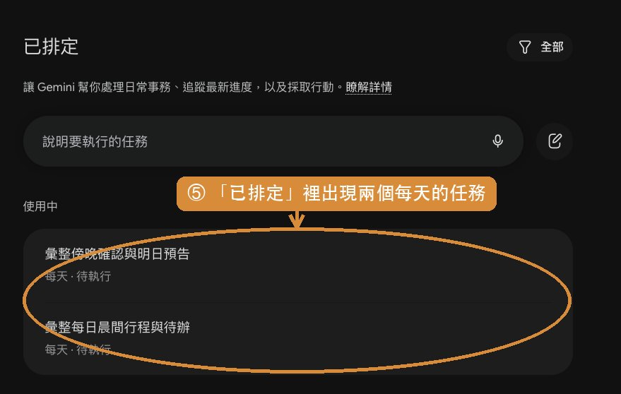
點圖看大圖
先模擬一次，看格式對不對，再排時間。早上報一次、傍晚再報一次，重複確認。
AI 可能以為只有行事曆上的才算事，漏掉待辦、沒回的邀約信、LINE 群組裡的改期。
我問你有沒有事的時候，不要只回我沒事。你要跟我說你查了哪些地方，每個地方的結果是什麼。
「我問它有沒有事情的時候，禁止跟我說沒事。它要跟我說它查了哪些地方，上面都沒有資料。比如我查了 email，今天是空的；查了你的行事曆，今天是空的；查了你的待辦也是空的。」
「因為我之前問它有沒有事，它說沒事，它以為只有放在行事曆的才算。但是我待辦裡面有事，email 裡面有人邀約我我忘了回，LINE 群組有人跟我說要改期，我還忘記回。」
江江教練 · 每個月兩場免費講座
「希望大家可以練習，在跟 AI 操作的時候，把我們的原則提煉出來，這個我覺得很重要。知其然，更要知其所以然。你有辦法把這個原則提煉出來，AI 可以做更多的事情。」
台灣大家的工作訊息、進度，最多都散落在 LINE 群組裡。剛剛的秘書已經能讀行事曆、Google 文件；如果它也能讀 LINE，整個就串在一起了。
LINE 要怎麼讀？可以參考這堂工作坊。
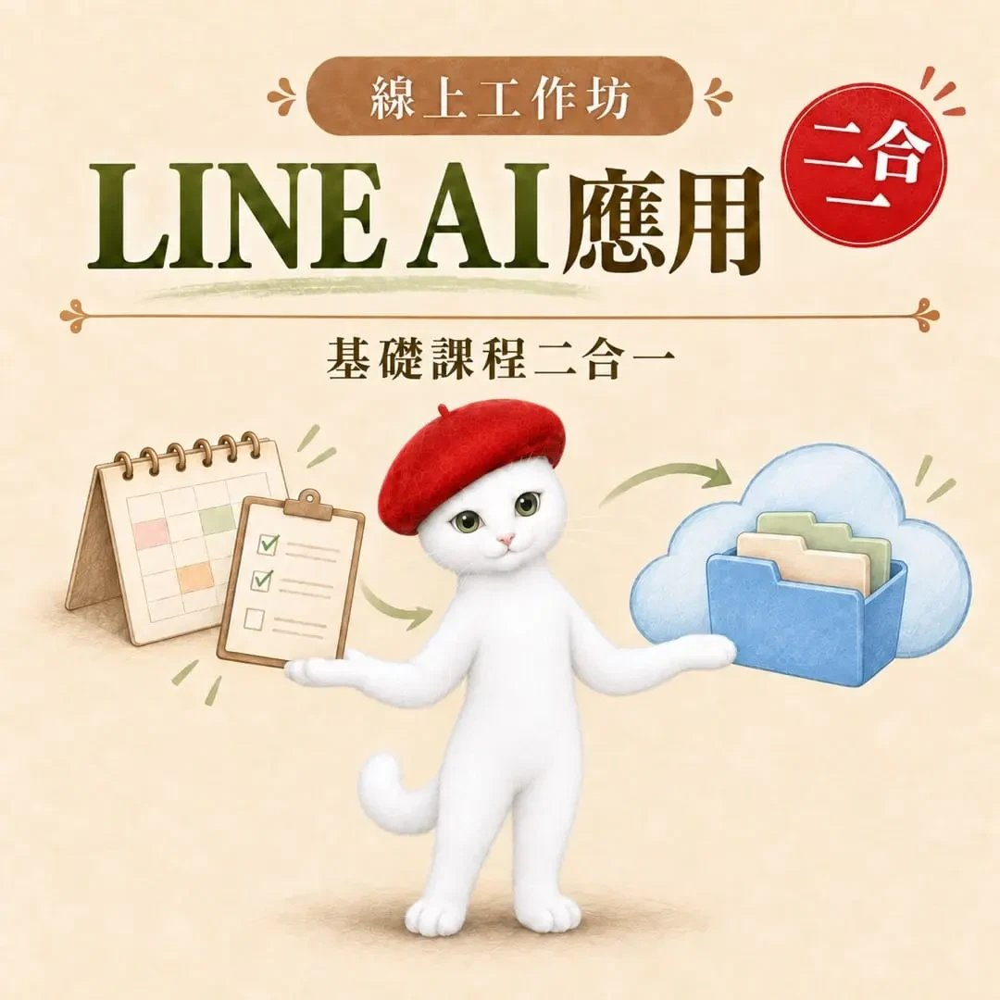
點圖看大圖
「像我 10 月初的時候，它就提醒我 Adobe 快到期喔，記得續約。我看到一瞬間就立刻解約了，因為年約到期了，很多 AI 都可以做了。還有 LINE 群組，它會抓到有人改期你還沒確認，或誰跟你約幾月幾號，要趕快回他。」
「我在上 Agent 的課程叫大家提煉知識，發現東西都卡在 LINE 裡面。我們所有的工作、所有的交流、所有的專業知識，都發生在群組。只要把群組裡面的東西抓出來，叫 AI 幫我們整理淬鍊，順便訂一下行事曆跟待辦清單，就會輕鬆不少。」
11/8（日）14:00–16:00 線上工作坊
有錄影回放，送技能包與講義，限 99 人
・10/31（六）講座價 NT$680：今晚 24:00 前下單
・11/1（日）到 11/8（日）開課前，特價 NT$880
・第一次上完之後，兩堂課會分開賣，恢復原價：每堂 NT$500，兩堂合計 NT$1,000
這是兩堂課加在一起：第一堂 LINE AI 串接（行事曆、待辦），加上第二堂雲端硬碟串接。
・線上工作坊兩小時，帶大家實際操作
・錄影回放，不用擔心跟不上
・技能包，拿到就可以直接用
・老師的講義
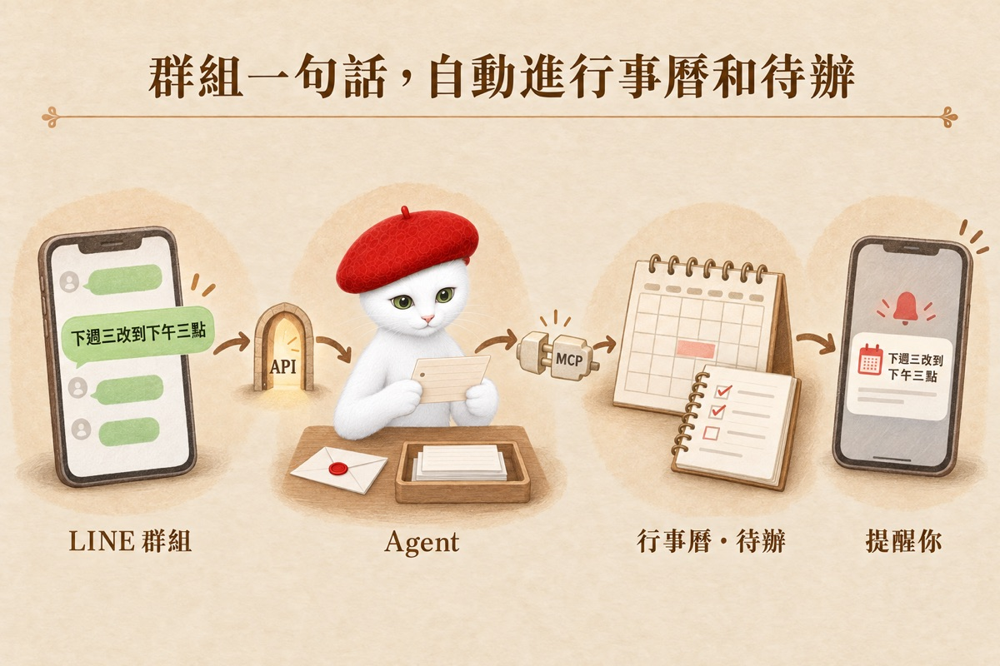
點圖看大圖
這堂課教你怎麼透過 AI 去串接其他工具，打造一個工作流程。
範例用的是大家最常見的 LINE 群組：把群組對話和行事曆串接起來。群組裡有人說要改時間、交代事情，就會自動連到你的行事曆和待辦，不用怕忘記事情。
・搞懂什麼是 API、MCP、Agent 怎麼用
・把 LINE 群組和行事曆、待辦串起來
群組裡的照片、影片、檔案，直接存到你自己的 Google 雲端硬碟。不用擔心檔案錯過，也不用擔心過一陣子就過期消失，要找的時候還可以直接叫 AI 幫你找。
・Google 那邊要怎麼設定：開專案、打開雲端硬碟的 API、授權同意畫面、授權
・授權同意畫面為什麼一定要切成正式版（沒切七天後會失效）
・把 LINE 群組和雲端硬碟串起來，每個群組一個資料夾
・很忙的人
・群組很多的人
・希望 AI 幫你管群組、管行事曆、確認有沒有撞期的人
學會這套串接方法，之後你還可以自己再串更多工具。
・11/8（日）14:00–16:00 線上工作坊
・有錄影回放，送技能包與講義
・限 99 人
・ChatGPT、Gemini 都可以用
・10/31 講座價 NT$680，11/1 到 11/8 開課前特價 NT$880，第一次上完之後恢復原價
・課程說明與操作畫面：https://lyca-lineai-dpwu9o.pages.dev/#course
「坊間有教蠻多 LINE 怎麼去設定的方法，但我這個是針對 AI Agent 的工作流，一整套 AI Agent 的工作流，再串接 LINE。因為我發現很多時候大家的資料都卡在 LINE 裡面拿不出來，拿不出來其實很難做後續的應用。」
「我會教大家怎麼樣把 LINE 裡面的東西透過 API 串出來，接到我們的 AI 裡面。第二個也可以去接雲端硬碟，像 LINE 現在一個禮拜就過期了。」
「有錄影回放，所以不用擔心老師講得太快怎麼辦，我會一步一步一個細節去講清楚。會有講義，甚至我有配好的技能包會給大家。」
「這次上完課之後，我會把各種 LINE AI 應用直接做成預錄線上課，一個單元課程是 500，這個是兩個單元：AI 串接行事曆，加 AI 串接 Google 雲端硬碟。」
不用。今天的內容免費版 Gemini 都可以用；LINE 串接工作坊鎖定 Google 家的服務（Gmail、行事曆、待辦、雲端硬碟），免費版 Gemini 也可以串。
ChatGPT 要 690 的方案才能自動串接。免費版可以讀 Gmail，但 Google 文件、檔案存取被鎖住。
可以，直接接到行事曆。手機能上網頁版的 Gemini 或 ChatGPT 就能做；建議有訂 690 的，能串的工具比較多。沒有也可以接，只是比較辛苦，會手把手教。
Grok Bot 裡面內建一台電腦，可以直接安裝 Claude Code、Codex 的終端機版本。
「我都是鎖定 Google 家的服務，所以在 Google 的條件下，Gemini 免費就可以串接。GPT 用戶需要 690 才可以自動串接，因為它要用到外掛程式才有辦法接。如果我希望 LINE 的檔案可以自動備存，GPT 版本要 690，Gemini 免費版就可以使用了。」
「之後更進階的應用，就建議一定要是桌面版、有付費的 Agent，基本上工具都是可以通的，會簡單非常多。最基礎的工具串接原理其實都一樣：什麼叫做 API、什麼是 MCP，AI 跟工具之間怎麼直接互動。新的工具出來了，我學不會怎麼辦？叫 AI 學，叫 AI 操作。」
「我最終的組織圖會是 Grok Bot 操作我的 Claude Code，再由它派工給其他的 AI。它真的是一個很好的派工窗口。」
「我 2023 年玩 ChatGPT 玩了一整年，2024 年就意識到，我應該要有一個資料夾，把我所有的知識經驗裝在裡面，哪個 AI 好用我就餵給哪個 AI，不用一個一個重新訓練。所以我嚴重綁定本地端。如果大家從現在開始建立規則、建立技能包，建議就是雲端化。」